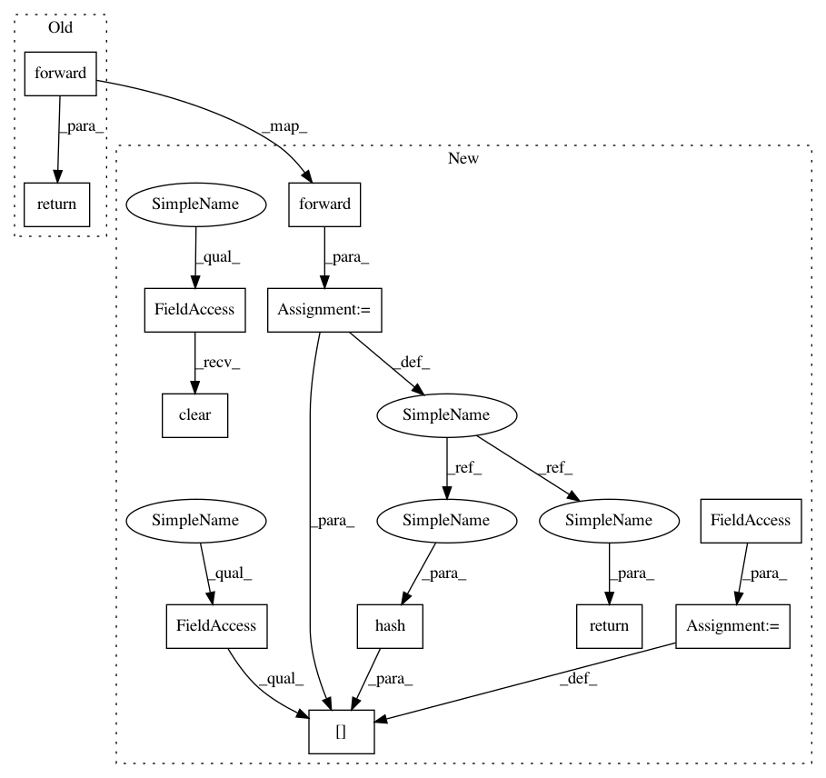

5c692f345e539ecf5d3a4b37d8150cea82ee41bf,pixyz/distributions/flow_distribution.py,TransformedDistribution,forward,#TransformedDistribution#,122
Before Change
z : torch.Tensor
return self.flow.forward(x=x, y=y, compute_jacobian=compute_jacobian)
def inverse(self, z, y=None):
Backward (inverse) propagation of flow layers.
After Change
z : torch.Tensor
z = self.flow.forward(x=x, y=y, compute_jacobian=compute_jacobian)
self.stored_x.clear()
self.stored_x[hash(z)] = x
return z
def inverse(self, z, y=None):
Backward (inverse) propagation of flow layers.
In pattern: SUPERPATTERN
Frequency: 3
Non-data size: 12
Instances
Project Name: masa-su/pixyz
Commit Name: 5c692f345e539ecf5d3a4b37d8150cea82ee41bf
Time: 2020-09-29
Author: kaneko@weblab.t.u-tokyo.ac.jp
File Name: pixyz/distributions/flow_distribution.py
Class Name: TransformedDistribution
Method Name: forward
Project Name: masa-su/pixyz
Commit Name: 031e7d514c9f43ef4cf3e9847ce5883c6adc3439
Time: 2020-10-12
Author: kaneko@weblab.t.u-tokyo.ac.jp
File Name: pixyz/distributions/flow_distribution.py
Class Name: TransformedDistribution
Method Name: forward
Project Name: masa-su/pixyz
Commit Name: 8aeaf156982b4164657876a485d3b0834d991964
Time: 2020-09-14
Author: kaneko@weblab.t.u-tokyo.ac.jp
File Name: pixyz/distributions/flow_distribution.py
Class Name: TransformedDistribution
Method Name: forward